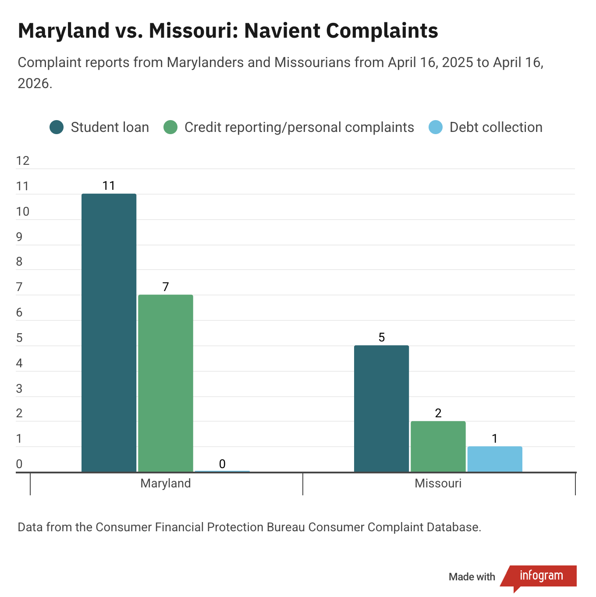
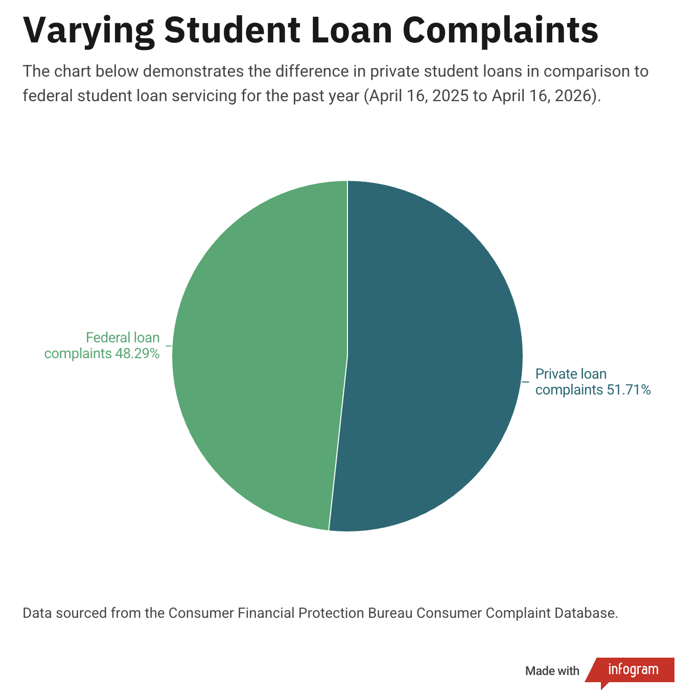
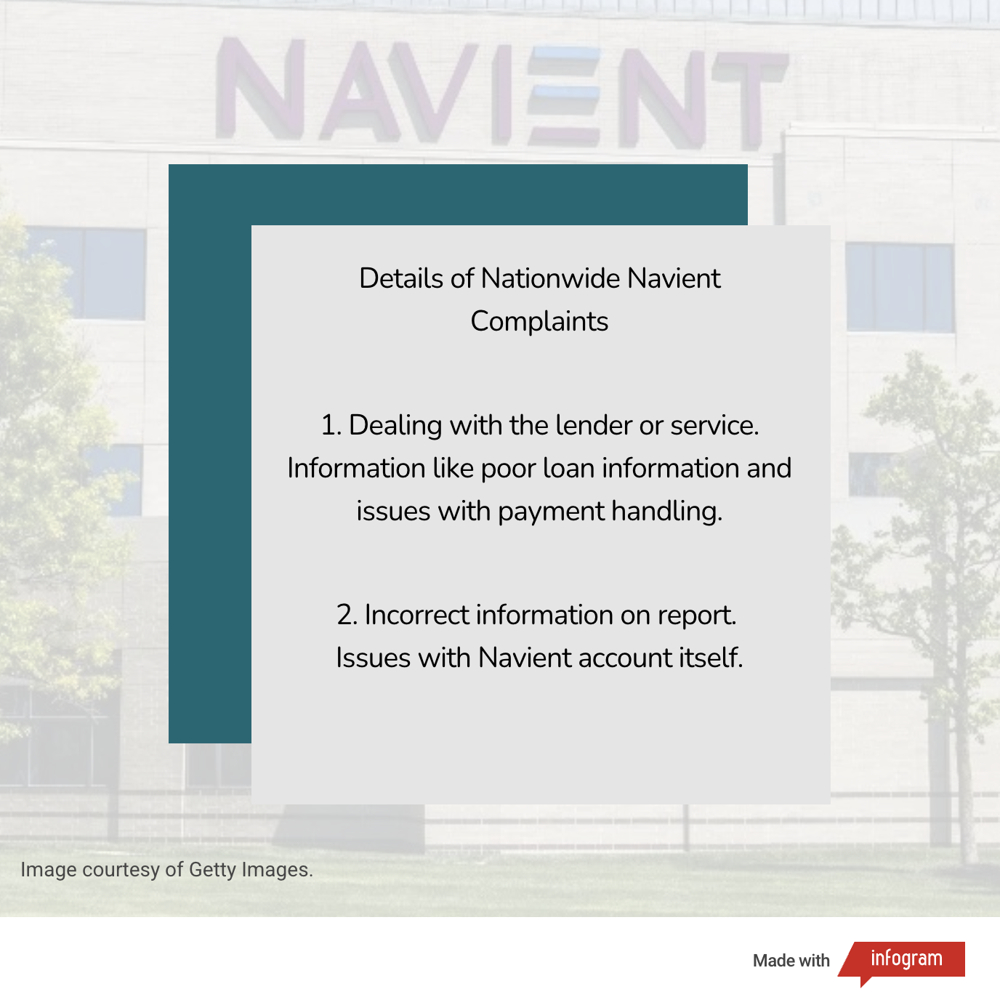

By Ashna Balroop
April 19, 2026
Over the past year, more Marylanders than Missourians have filed complaints with the Consumer Financial Protection Bureau about Navient.
Navient is a financial services company that collects private student loans, and in some cases, legacy Federal Family Education Loan Program loans, according to
studentloanplanner.com.
In the past year, Maryland residents filed 11 student loan-related complaints and seven credit reporting or other personal complaints.
Missouri filed five student loan related complaints, two credit reporting or other personal complaints and one debt collection complaint.
Maryland and Missouri were compared due to similar populations. Roughly 6.2 million people live in both states, but they are both in different geographical locations.
Missouri is in the Midwestern United States, while Maryland is in the Mid-Atlantic.
The reasoning as to why Maryland residents would file more CFPB complaints than Missourians is not immediately clear given the similar populations.
Over the past year, some of the notable complaints the company has collected nationwide consist of 557 student loan complaints and 181 credit reporting or other personal complaints.
Of the 557 student loan complaints, 288 were about private student loans and 269 were in regard to Federal student loan servicing.
Nationwide complaints about Navient within the past year were mostly dealing with the lender or servicer, according to
consumerfinance.gov.
These could be issues like receiving bad information about your loan or having trouble with how payments are being handled.
The second most popular complaint this year was incorrect information being on the report itself. This ranges from the Navient account information to the status being incorrect.
Zooming out to the past three years, the consumer complaint database reports 4,329 student loan-based complaints towards the company.
Of these complaints, 2,789 are for private student loans and 1,540 were in regard to federal student loan servicing.


